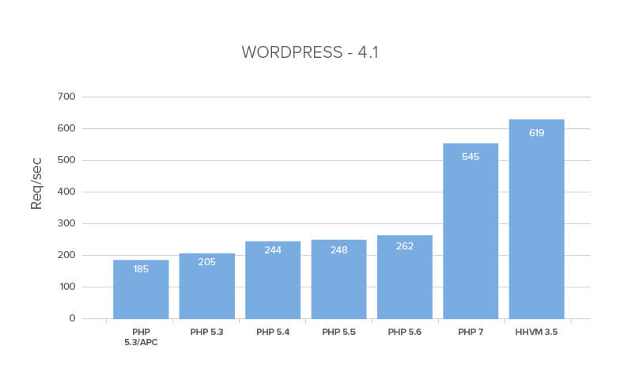

MS RFC 117: PHP 7 MapScript Support Through SWIG¶
- Author:
Jeff McKenna
- Contact:
- Last Updated:
2017-02-02
- Version:
MapServer 7.2
- Status:
Draft
1. Motivation¶
The PHP 7.0.0 release in December 2015 was a substantial change in the backend structure and caused a complete break in builds for MapServer’s PHP MapScript extension. Packagers, site administrators, developers, and service providers are all impatiently awaiting the release of MapServer with PHP 7 MapScript support.
PHP 7 contains a whole new Zend engine (called “PHPNG”, or PHP Next-Generation) designed to speed up PHP applications; PHP 7 boasts many improvements over PHP 5.6 including:
performance (boasting “up to twice as fast as PHP 5.6”)
significantly reduced memory usage
consistent 64-bit support
many fatal errors converted to exceptions
new combined comparison (Spaceship) operator <=>
new null coalescing operator ??
anonymous classes
and more, see the PHP 7 Migration Guide

source: digitalocean.com¶
MapServer’s several mapscripts (Java, Python, Csharp) use the SWIG library (wrapper library used to convert code into other languages) to automatically generate the necessary mapscript code; the existing PHP MapScript extension however does not use SWIG and was custom written at the time. MapServer’s Project Steering Committee (PSC) has also discussed the possibility of leveraging SWIG for the longterm support of PHP MapScript.
The SWIG team has recently added support for PHP 7 in their development sandbox, it passes all of SWIG’s test suite, and has been well received by the community.
2. Proposed enhancement¶
Remove the custom extension code for PHP from MapServer, and enable SWIG for generating the PHP MapScript extension, by using the latest SWIG development version with MapServer’s wrapper mapscript.i. SWIG would automatically generate a PHP extension that contains most of MapServer’s constants, objects, and methods. Similar to MapServer’s other SWIG-based languages, any custom PHP classes or functions would be defined in the new file /mapscript/php/phpextend.i
2.2 Backwards Compatibility¶
This change should automatically support both the PHP 5 and 7 series. At some point the SWIG team will remove support for PHP 5 (they are discussing this now), but likely it would match the PHP 5.6 Security Support timeline (until 2018-12-31).
To handle any possible issues of compatibility in the short term:
All SWIG PHP code will live in its own directory: /mapscript/phpng/
The module will be named phpng_mapscript.so or phpng_mapscript.dl
2.3 Performance Implications¶
As mentioned above, this should give a huge performance boost.
2.4 Limitations¶
Packagers/packages relying on stable releases won’t be likely to include SWIG-dev, until the official SWIG release contains PHP 7.
Update: the recent official SWIG-3.0.11 release on 2016-12-29 now includes the PHP 7 support (see announcement)
During compile of the PHP MapScript extension through SWIG-dev, PHP’s reserved keywords for the functions “empty()” and “clone()” are automatically renamed by SWIG to “c_empty()” and “c_clone()” for several MapServer objects, as follows:
..\..\mapserver.h(920) : Warning 314: 'empty' is a PHP keyword, renaming to 'c_empty' ..\swiginc\map.i(64) : Warning 314: 'clone' is a PHP keyword, renaming to 'c_clone' ..\swiginc\layer.i(128) : Warning 314: 'clone' is a PHP keyword, renaming to 'c_clone' ..\swiginc\class.i(122) : Warning 314: 'clone' is a PHP keyword, renaming to 'c_clone' ..\swiginc\style.i(122) : Warning 314: 'clone' is a PHP keyword, renaming to 'c_clone' ..\swiginc\shape.i(110) : Warning 314: 'clone' is a PHP keyword, renaming to 'c_clone'
This needs discussion, on how to handle that (document these changes in the SWIG API for PHP, or change the underlying function names in the MapServer source)
Update: regarding the ‘clone()’ keyword, Java MapScript also faced this issue and solved it by redefining the functions, such as cloneMap() or cloneLayer():
#ifdef SWIGJAVA %newobject cloneMap; mapObj *cloneMap() #else %newobject clone; mapObj *clone() #endif
In downstream PHP scripts, users must include the SWIG-generated file mapscript.php before calling any MapScript objects, as this file contains various constants and classes:
<?php include("mapscript.php"); $mapfile = "C:/ms4w/apps/gmap/map/swig.map"; $oMap = new mapObj($mapfile);
In downstream PHP scripts, users will have to modify their syntax for declaring new objects, such as:
from:
<?php $oMap = ms_newMapObj(MAPFILE);
to:
<?php include("mapscript.php"); $oMap = new mapObj(MAPFILE);
3. Implementation Details¶
3.1 Affected files¶
mapscript.i: add reference to phpextend.i
phpextend.i: can contain custom objects and methods needed, such as:
adding the MapScript information to the phpinfo() calls
PHP_MINFO_FUNCTION
properly initialize and close resources:
PHP_MINIT_FUNCTION
PHP_MSHUTDOWN_FUNCTION
PHP_RINIT_FUNCTION
PHP_RSHUTDOWN_FUNCTION
handle imageObj’s output to STDOUT (currently extended for Python and Csharp only)
imageObj->write()
other??
3.2 Tracking Issue¶
current status:
extension info is displayed properly through phpinfo()
map image can be generated with a PHP 7.0.14 script that simply loads a mapfile and saves the image file, on Windows
todo:
modify Windows build scripts, for cmake
push all changes to sandbox
code: https://github.com/jmckenna/mapserver/tree/phpmapscript-swig
tests: need to update all of the existing PHP tests in /msautotest/php/
3.3 Documentation¶
4. Voting History¶
TBD